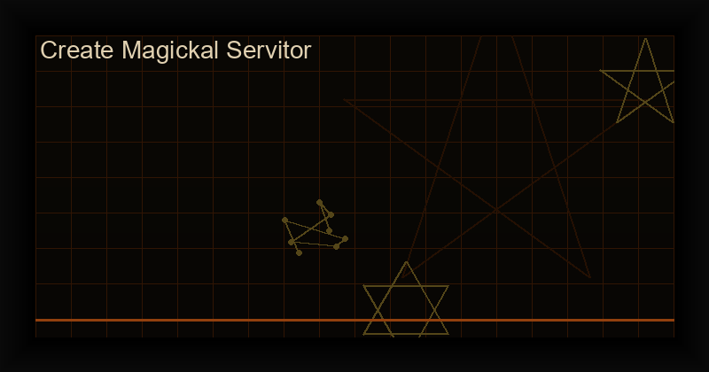

How to Create a Magickal Servitor: Complete Guide to Chaos Magick Thought Forms
Table of Contents
What Is a Magickal Servitor?
A magickal servitor is an artificially created thought-form | a semi-autonomous entity built from focused will, symbolic encoding, and gnostic charging. Unlike a sigil (which fires once and dissipates), a servitor is designed for ongoing tasks: protecting a space, performing recurring magical operations, gathering information, or influencing circumstances over time.
The concept was systematized in chaos magick by Peter J. Carroll in Liber Null (1978) and refined by Phil Hine in Condensed Chaos. However, the underlying principle | that focused intention can create autonomous psychic structures | appears in virtually every magical tradition under names like egregore, familiar, tulpa, and artificial elemental.
Servitor vs Sigil: Key Differences
| Aspect | Sigil | Servitor |
|---|---|---|
| Duration | One-time discharge | Ongoing (until dismissed) |
| Complexity | Simple glyph | Complex thought-form |
| Consciousness | None | Semi-autonomous |
| Maintenance | None | Regular feeding |
| Best for | Single specific goal | Ongoing tasks |
For a deeper comparison, see our Sigil vs Servitor complete guide.
How to Create a Magickal Servitor: Step-by-Step
Step 1: Define the Servitor's Purpose
Write a clear, concise statement of intent. Example: "My servitor Vigilus monitors the energetic boundaries of my home and alerts me to intrusions." The more specific, the more effective. A vague servitor produces vague results.
Step 2: Design the Sigil
The servitor's sigil is its anchor in your subconscious. Use the same method as sigil creation: write the purpose, remove vowels and repeated letters, combine remaining consonants into a unique glyph. The Chaos Sigil Generator app can create these sigils using cryptographic entropy for mathematical uniqueness.
Step 3: Assign a Name
The name gives the servitor identity. It should be easy to pronounce and not resemble any known name (to avoid unwanted associations). Examples: Vigilus, Lumina, Thorum, Nyxara.
Step 4: Create the Anchor
The anchor is the servitor's physical home. This can be a drawn sigil on paper, a carved candle, a digital image, or even a dedicated object. The anchor grounds the servitor in physical reality and gives you a focal point for feeding and communication.
Step 5: Activate Through Gnosis
Enter a gnostic state (meditation, breathwork, sensory deprivation, or excitatory methods like dancing). Hold the sigil in your mind. Visualize it glowing, expanding, and taking on a life of its own. Speak the servitor's name and purpose aloud. Feel it separate from your consciousness. This is the moment of birth.
Step 6: Feed and Maintain
Servitors need regular energy to survive. Establish a feeding schedule: daily for the first week, weekly thereafter. Feeding methods include:
- Attention: Meditate on the sigil for 2-3 minutes
- Energy: Visualize light flowing into the sigil
- Offering: Burn incense, leave a small offering, or dedicate an action
Q&A: Magickal Servitors
Are servitors dangerous?
Servitors are tools, not entities with independent will. A well-designed servitor with a clear purpose and regular feeding is no more dangerous than a hammer. Problems arise only when: (a) the purpose is vague, (b) the servitor is neglected, or (c) it's not properly dismissed when its task is complete.
How do I dismiss a servitor?
When a servitor's task is complete, formally dismiss it: enter a light gnostic state, thank the servitor, visualize its sigil dissolving, and state clearly: "You are released. Your purpose is fulfilled. Return to the void." Destroy or seal the physical anchor.
How long does a servitor last?
With regular feeding, a servitor can last indefinitely. Without feeding, most servitors dissipate within 2-4 weeks. Some practitioners design servitors with built-in "lifespans" that self-terminate after a set period.
What's the difference between a servitor and an egregore?
A servitor is created by an individual for a specific task. An egregore is a collective thought-form created and sustained by a group (a coven, order, or community). Egregores are more powerful but harder to control.
Can multiple people create the same servitor?
Yes, but it's advanced work. Each person adds their energy to the same sigil and purpose. This creates a more powerful entity but requires coordination and trust. This is how group egregores are formed.
Download the Complete Magickal Servitors PDF Guide
Get the full Magickal Servitors Manual by Frater Alek0s | 50+ pages covering advanced design, planetary correspondences, group egregores, and troubleshooting. One-time purchase, instant PDF download.
Get the Magickal Servitors PDF ?References
- Carroll, P.J. (1987). Liber Null & Psychonaut. York Beach, ME: Samuel Weiser.
- Hine, P. (1995). Condensed Chaos: An Introduction to Chaos Magic. Tempe, AZ: New Falcon Publications.
- Spare, A.O. (1913). The Book of Pleasure (Self-Love). London.